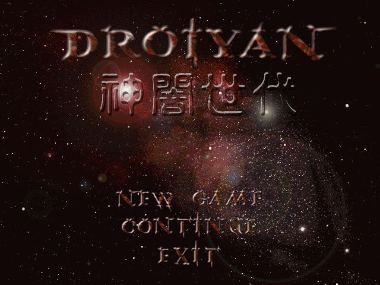
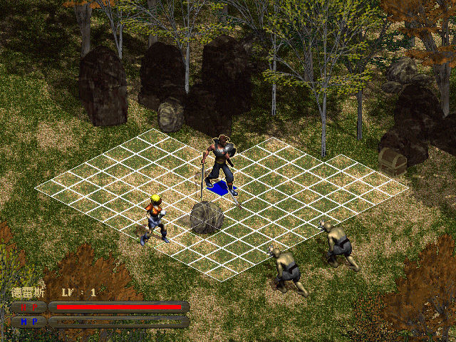

名稱：神闇世代／神暗世代 (Droiyan，中文版) 簡介：韓國KRG 1999年出品的策略角色扮演遊戲，由歡樂盒中文化並代理發行 [待補]。

保護：光碟，將光碟上的avi檔與MAP目錄拷貝到安裝目錄，再修改Droiyan.ini前3 byte為： 2E 5C 00，即可免光碟（但放入光碟才有背景音樂）。 限制：遊戲只能在Win9x系統上安裝（但可在XP以上系統執行）。 備註：非安裝移機者，需修改Droiyan.ini裡的光碟路徑。 備註：大眾軟件雜誌附贈版的安裝內容，和歡樂盒原版完全相同。 備註：建議在PCem/86Box+Win9x系統上執行，否則遊戲速度會過快。